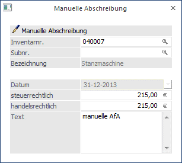
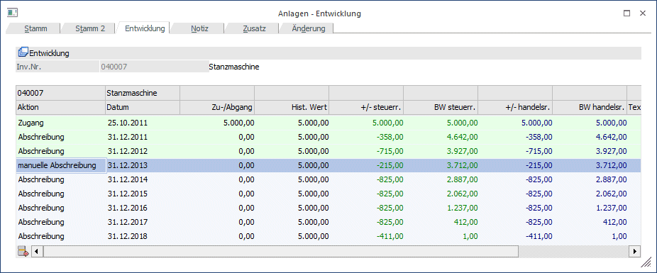

Die manuelle Abschreibung ist ein manuell erfasster Jahres-AfA-Betrag, der die automatisch vom Programm errechnete Jahres-AfA ersetzt. Als manuelle AfA muss immer der komplette Jahres-AfA-Betrag eingegeben werden, der in diesem Wirtschaftsjahr abgeschrieben werden soll.
Wenn nur eine AfA erfasst werden soll, die zusätzlich zu der vom Programm ermittelten Normal-AfA berechnet werden soll, dann muss dies über das Programm Außerplanmäßige Abschreibung geschehen.
Die manuelle Abschreibung finden Sie im Menüpunkt
1 Buchen
1 Manuelle Abschreibung
Hier können auch die Beträge bereits erfasster manueller Abschreibungen editiert werden.

Ø Inventarnr.
Eingabe der Inventarnummer, lt. Anlage im Menüpunkt
1 Stammdaten
1 Anlagenstamm.
Die Matchcode-Funktion erleichtert Ihnen die Suche.
Ø Subnr.
Eingabe der Subnummer, lt. Anlage im Menüpunkt Anlagenstamm; auch hier steht Ihnen die Matchcode-Funktion zur Verfügung.
Ø Datum
Auswahl des Datums, zu dem die manuelle Abschreibung durchgeführt werden soll. Es kann nur immer jeweils das Wirtschaftsjahresende eines noch nicht endgültig abgeschriebenen Wirtschaftsjahres ausgewählt werden.
Ø Steuerrechtlich/handelsrechtlich
Eine manuelle Abschreibung kann sowohl steuerrechtlich als auch handelsrechtlich durchgeführt werden. Daher gibt es für beide Varianten die Möglichkeit, eine Abschreibung durchzuführen.
Ø Text
Hier kann ein 255stelliger Buchungstext eingegeben werden. Dieser Text wird in den Auswertungen Historien-Journal und Anlagestammblatt angedruckt.
Hinweis
Die manuelle AfA (früher A.o. Abschreibung) kann seit der Version 8.3 auch für Wirtschaftsgüter mit einer Nutzungsdauer von 0 Jahren (z.B. Finanzanlagen) erfasst werden.
Löschen einer manuellen Abschreibung
Manuelle Abschreibungen können nicht nur geändert sondern auch gelöscht werden. Für das Wirtschaftsgut wird dann die AfA aufgrund der hinterlegten Stammdaten errechnet. Es gibt zwei Möglichkeiten, manuelle Abschreibungen zu löschen:
ü Programm Manuelle
Abschreibungen
Der Abschreibungsbetrag wird mit dem Wert 0,00
überschrieben.
ü Programm Anlagenstamm /
Entwicklung
Die Historienzeile mit der manuellen Abschreibung wird aktiviert
und über den Entfernen-Button gelöscht. Die gelöschte Zeile wird automatisch
durch eine "normale" Abschreibungszeile ersetzt.
Hinweis
Bei einer manuellen Abschreibung wird geprüft, ob es an einem jüngeren Datum bereits eine Umbuchung gibt und eine Meldung ausgegeben. Die Umbuchung muss dann erst gelöscht werden, bevor die manuelle Abschreibung gebucht werden kann.
Die manuelle Abschreibung ist sofort nach der Buchung in der Anlagenentwicklung ersichtlich.
